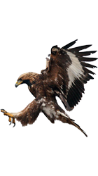
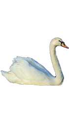
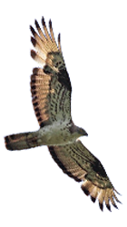

-

Бе́ркут — одна из наиболее известных хищных птиц семейства ястребиных, самый крупный орёл. Распространён в Северном полушарии, где обитает преимущественно в горах, в меньшей степени на равнинных открытых и полуоткрытых ландшафтах. Избегает жилых районов, чувствителен к беспокойству со стороны человека. На большей части ареала живёт оседло, держится парами возле гнезда, на северной периферии области распространения и высокогорья часть птиц откочёвывает в менее снежные районы. Охотится на самую разнообразную дичь весом от 0,4 до 5 кг, чаще всего на зайцев, грызунов и многие виды птиц, поедает падаль. Изредка нападает на ягнят и детёнышей оленей, либо на больных и раненых более крупных животных. Гнездо устраивает на дереве либо на труднодоступном скалистом уступе. В кладке обычно два яйца, однако чаще всего выживает только один птенец. В Центральной Азии беркута используют для промысловой охоты на лисиц, зайцев, иногда волков и джейранов.
-

У лебедей очень длинная шея, вытянутое туловище, тело и голова средней величины с оранжево-красным клювом, у основания которого есть характерный чёрный нарост. Шипуном назван из-за звука, издаваемого при раздражении. В длину может достигать 180 см, масса самок 5,5—6 кг, самцов 8—13 кг (отдельные особи могут весить до 22,5 кг). Размах крыльев лебедя-шипуна около 240 см.Лебедь-шипун обитает в северной части Европы и Азии. Всюду довольно редок. Однако при помощи человека этот вид лебедей успешно прижился в Северной Америке, Южной Африке, Австралии.Редкий вид птиц. Исчез на территории Республики Беларусь в конце XIX — начале XX вв. в результате истребления. Появление и восстановление птиц связано с их расселением из Литвы и Польши.В 2017 году ТюмГУ зафиксировал расширение ареала лебедя-шипуна до арктического побережья
-

Осое́д — дневной хищник семейства ястребиных отряда ястребообразных. Птица средних размеров, размах крыльев около 1,2 м. Распространён на большей части Европы и на западе Азии, на восток — до Алтая. В целом довольно редкая птица. Наиболее обычен в средней и южной тайге. Перелётный, прилетает позднее прочих хищников (на большей части ареала — в начале мая). Отлёт происходит в августе-сентябре, иногда затягивается до октября. Своё название осоед получил из-за того, что разрушает гнёзда ос и поедает их личинки. Кроме них, может питаться личинками шмелей или диких пчёл. В его рацион также входят лягушки, ящерицы, грызуны, жуки, кузнечики, мелкие птицы.Крупная птица с относительно длинным хвостом и узкими крыльями. На лбу и вокруг глаз короткие, жесткие перья, напоминающие чешую.